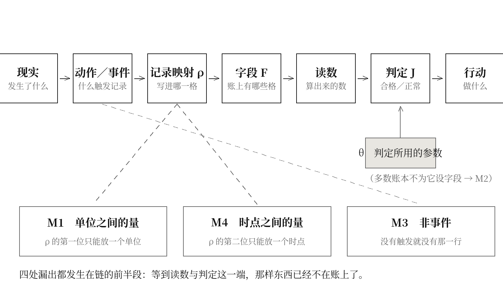
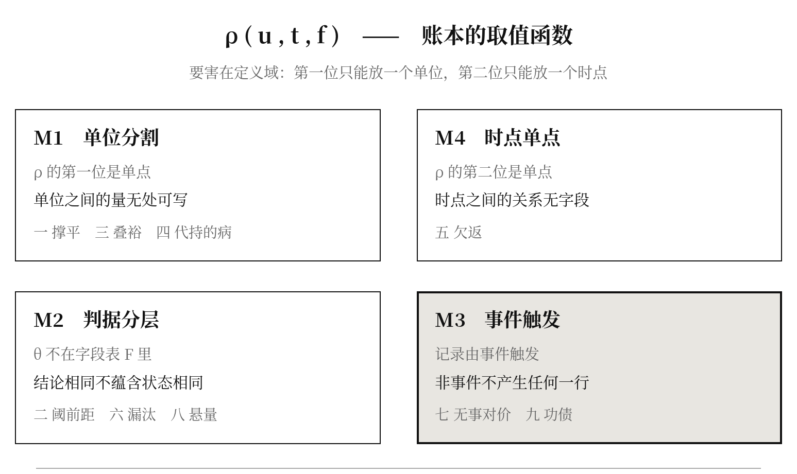
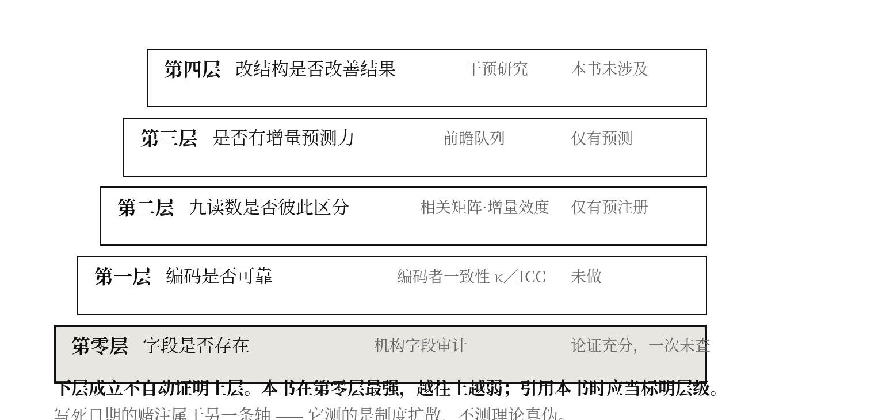

论账本决定什么能够成为制度判定对象——九栏不是九个发现，而是同一个形式限制在四个自由度上的四种后果
提要
前九章各自指认一栏在现行账本上没有位置，第四编又添了共载项。本总论要说的是：它们不是十个发现，是一个。 本总论给账本一个最小的形式描述——单位、时点、字段、取值——并证明：一旦判定制度采用这个形式，就必然有一类量在结构上无处可写。缺栏因此不是疏漏，也不是重视不够，是分割的代价。第四节把这个代价拆成四种机制，并指出九栏各自属于哪一种；第五节从形式上推出一条正文此前没有说过的判断：四种机制中有三种可以靠扩张账本的定义域消除，唯独第三种不能，因而第七章那一栏是九栏里最难立的一栏，且难在别处。第七节给出总论自己的证伪条件，第八节交代它自己的地位——一个不带读数的命题，按本书自己的规矩是一次违规，本总论为此写下辩解与代价。
一、十章其实只有一句话
一个读到这里的读者，手上有十个新词：撑平、阈前距、叠裕、代持额度、欠返、漏汰、无事对价、悬量、功债，以及第四编的共载项。他会合理地怀疑：这是十个发现，还是一个说法被换了十个名字？
第十章用一张三乘三的表回答了前一半：这九样不是同一样东西的九次改名——横读与竖读排除了“它是学科选择的产物”与“它是问题措辞的产物”两种解释。
但第十章没有回答后一半：如果它们确实不同，那么它们为什么会同时出现？ 九个互不相同的缺口，出现在九组互不相干的学科里，形状却一样——这件事本身需要一个解释，而这个解释不可能来自九章中的任何一章。
本总论给这个解释。它只有一句：
一个判定制度一旦按“单位”和“时点”建账，就有一类量在结构上无处可写。九栏是这一类量的九个实例。
下面把这句话说成可以检验的形式。
二、三种“存在”，本书只主张第三种
在给账本作形式描述之前，必须先把一个区分立住，否则本书全部的力量都会被一句话推翻——“你说它不存在，可它明明在发生”。
这句反驳是对的，而它反驳的不是本书的主张，是本书此前一处不严谨的说法。本节把三层分开：
第一层，现实过程。 有人在半夜起来给老人翻身；四张处方共同扣着同一份肝肾清除能力；参考区间在两次判定之间被改过一版；两次值班之间的间隔短于这个人恢复所需的时间。这些都真实发生了，与有没有人记录它们无关。 本书从不主张它们不存在。
第二层，概念对象。 把上面那些分散的事实聚成一个可以被指称的东西，并给它一个名字：撑平、叠裕、阈前距、欠返。这是研究者做的事，本书做的正是这一层的工作。 一个概念对象成立与否，看的是它能不能把两种此前混在一起的情形分开，而不是看它有没有被记录。
第三层，制度对象。 这个概念是否拥有：一个字段、一个责任主体、一套计算规则、一个资源科目、一个可以据以行动的接口。只有具备这五样，一件事才在这套制度里“是一个对象”——才能被判定、被结算、被处置、被追问。
本书能够严格主张的，只有第三层。
不是“那件事在现实中不存在”，而是——它尚未被构造成现行判定制度可识别、可结算、可行动的对象。
据此，全书凡出现“它不存在”“删掉这个读法它就不存在”一类说法，一律应当读作第三层意义上的“尚未成为制度对象”，而不是第一层意义上的“现实中没有”。这不是一句免责声明，它改变了本书的负担：本书要证的不是“某样东西被遗漏了”，而是“某样东西在这套形式下不可能获得位置”——后者更难证，但也更值得证，而且它有明确的证伪条件（见第十二节）。
同样，本总论标题里“账本决定对象”这句话，完整的说法是：账本决定什么能够成为制度判定对象。 它不决定什么在现实中发生。
三、账本的四个部件
本节给账本一个最小描述。它不是一个模型，是把“一本账”这件事的形式写清楚，以便下一节可以对它做推理。
一本账由四样东西构成：
- 单位集 U：账本以什么为记录对象。病历以人为单位，藏品档案以件为单位，工艺台账以釜为单位，部门成本账以科室为单位。
- 时点集 T：账本在什么时候记。就诊日、检验日、巡检日、结账日。
- 字段集 F：账本为每一次记录预留了哪些格子。血压、体温、壁厚、库存、工时。
- 取值 ρ：把“哪个单位、哪个时点、哪个字段”映到一个值。记作 ρ(u, t, f)。
一份记录就是一组 ρ(u, t, ·)。一次判定，是把这组值送进一个判定函数，得到“正常／异常”“合格／不合格”。
关键在 ρ 的定义域：它的第一个位置是一个单位，第二个位置是一个时点。这不是一个可以商量的技术细节，而是“按单位建账”这句话的全部含义。
由此可以给出一个干脆的定义：
一个量 q 是这本账可记的，当且仅当存在一个字段 f，使得 q 在每个 (u, t) 上的取值等于 ρ(u, t, f)。
不可记，不等于测不出来、算不出来、或者不重要。它只意味着一件事：这本账没有一个位置可以放它。

四、六条前提：这个形式描述在什么条件下有效
上一节的描述并非对一切记录制度都成立。关系表、事件流、过程日志、多主体记录、知识图谱，本来就能记下单位之间的关系、两个时点之间的区间、版本与来源，以及“到期检查而未发生任何事”这样的周期性记录。因此“按单位建账必然缺栏”不是一条无条件的定理，而是一个有前提的命题。 把前提写出来：
- A1：主记录以单一单位为主键，一行对应一个单位。
- A2：每一行由事件触发产生——做了一次检查、开了一次药、换了一个件、开了一次会。
- A3：判定所用的参数 θ（阈值、参考区间、评级标准）不作为正式字段进入这一次判定的记录。
- A4：不存在跨单位关系表；或虽存在，而它不进入这一次判定。
- A5：不存在在无事件条件下自动生成的周期性记录。
- A6：后台数据、其他条线的记录与正式判定记录之间没有可追溯的连接。
于是下一节四条命题的正确表述是：
在满足 A1–A6 的记录制度中，M1–M4 四类量将结构性缺席。
这个写法立刻带来两个好处。其一，本书变得可以被反例击中：只要指出一个满足 A1–A6 而四类量俱全的制度，本书为伪（见第十二节其一）。其二，它把处方说清楚了——补栏不是“多加一格”，而是逐条解除 A1–A6 中的某几条：解 A4 与 A1（建关系表并让它进入判定）、解 A3（把 θ 并入字段）、解 A5（建立无事件也生成的周期记录）、解 A6（打通后台与判定主线）。其中 A2 与 A5 是同一件事的两面，也正是最难的那一面。
必须写下的一句：多数运行中的临床、检验、工艺与工单系统，同时满足 A1–A6 中的五条以上——这是一个可以逐项核查的经验断言，不是一个理论假定。本书没有做这次核查，附录三的字段审计正是为它设计的。
五、四条命题
3.1 命题一：跨单位的量不可记
设 q 的取值依赖于两个或更多单位，且这种依赖不可退化为对其中某一个单位的依赖。那么 q 不是这本账可记的。
理由是形式上的，不需要任何经验前提：ρ 的第一个位置只能放一个 u。要表达“u₁ 与 u₂ 之间的那个量”，需要 ρ(u₁, u₂, t, f) 这样的二元定义域，而按单位建立的账本没有这个定义域。
一个直接的后果：设有 k 个单位共享一份容量为 C 的储备，单位 u 声明的份额为 c(u)，每一家的合格判定是 c(u) ≤ C。则每一家都合格，与 Σc(u) ≤ C，是两件事——前者可以全部为真而后者为假。而 Σc(u) 依赖 k 个单位，按命题一不可记。
于是第三章的那一格是必然的，不是巧合：只要有共享储备而账本按单位建，“各单位全合格而总量超支”这一格就一定存在，且一定不可见。
3.2 命题二：判定所依据的参数不可记
判定不只用到 ρ(u, t, ·)，还用到一组参数 θ(t)——参考区间的上下限、验收阈值、评级标准。判定函数其实是 J(ρ(u,t,·), θ(t))。
若 θ 不在 F 中（多数账本如此：报告打印参考区间的数值，不打印它的版本与生效日期），则：
两次判定结论相同，不蕴含两次的状态相同。
因为 J(x₁, θ₁) = J(x₂, θ₂) 可以在 x₁ ≠ x₂ 时成立，只要 θ 同时移动。第二章处理的正是这一格。
这一条与命题一形式不同：那里缺的是定义域的宽度，这里缺的是字段表里少了一项——θ 本身就是一个可以被记下来的量，只是没有人给它留格子。这个区别决定了它最容易补，见第五节。
3.3 命题三：非事件不可记
账本的记录是被触发的：做了一次检查、开了一次药、换了一个件、开了一次会，才产生一行。
设 q 的取值由“某件事没有发生”决定。没有发生，就没有触发；没有触发，就没有那一行。因此不存在任何 (u, t, f) 承载它。
这一条与前两条根本不同：它不是定义域不够宽，也不是字段表漏了一项，而是记录这个动作本身的触发条件问题。 第七章处理的正是它，第九章“成功之后留下的负荷”有一半也在这里——预防成功之所以不产生下一轮资源，是因为它的兑换物是一个非事件。
3.4 命题四：时点之间的量不可记
ρ 的第二个位置只能放一个 t。凡是需要 (t₁, t₂) 两个时点才能定义的量——两次负荷之间的间隔相对于恢复时间，一个过程从开始到首次入账的时长——都不是这本账可记的。
多数账本以为自己记录了时间：每一行都有日期。但记下时点，不等于记下时点之间的关系。日期使得关系可以被算出来，而算出来的东西不在账上，也就不在任何一次判定里。第五章与第七章各占这一条的一半。
六、四种机制，九栏各归其位
上面四条命题给出四种缺栏机制。它们不是四类主题，是账本这个形式的四个自由度：
| 机制 | 缺什么 | 本书哪几栏 | |
|---|---|---|---|
| M1 | 单位分割 | 单位之间的量无处可写 | 一 撑平 · 三 叠裕 · 四 代持的病 |
| M2 | 判据分层 | 判定所用的参数不在字段表里 | 二 阈前距 · 六 漏汰 · 八 悬量 |
| M3 | 事件触发 | 非事件不产生记录 | 七 无事对价 · 九 功债 |
| M4 | 时点单点 | 时点之间的关系无字段 | 五 欠返 |
必须交代一处不整齐：这张表不是一一对应的。第八章的“落点自证率”同时踩在 M2 与 M1 上（介入对象的选择依据既是一个判定参数，又要求把这一个对象与人群作比较）；第九章的续养率同时踩在 M3 与 M4 上（它记的是非事件留下的东西，而“留下”是一个跨时点的量）。归类是主导机制，不是唯一机制。 一个更严格的处理应当给每一栏一个四维的机制权重，本总论没有做——那需要先有第十一章那份相关矩阵。
这张表本身给出一条可检验的预测：任何一个按单位与时点建账的成熟判定制度，都应当能按 M1–M4 找到相应的缺栏；而它们缺的具体是什么，取决于该制度的单位怎么划、判定用什么参数、由什么触发记录。机制相同，实例不同。 这正是九组互不相干的学科交出九样不同东西、而形状相同的原因。

七、一条从形式推出来的判断
四种机制看上去并列。做一次形式上的追问，会发现它们并不同类。
M1 与 M4 是同一件事的两个方向：ρ 的定义域是单点——在 U 上是一个单位，在 T 上是一个时点。把定义域从 U×T 扩到 U×U×T×T，两者同时消失。这在技术上不难：数据库加一张关系表即可。
M2 是字段表的遗漏：θ 本来就是一个可以被写下来的量，把它并入 F 即可。这更不难——参考区间的版本号是现成的，只是没有人把它打印在报告上。
M3 不能靠这两种办法消除。 扩张定义域不能创造一条本来不存在的记录；把 θ 并入 F 也无济于事。因为 M3 不是“放在哪里”的问题，是“什么使记录发生”的问题。要记下一个非事件，必须有一个不由事件触发的记录动作——也就是说，必须有人在什么都没发生的时候，专门去记一笔。
由此推出一条本书前十五章都没有说过的判断：
九栏并不同样难立。M1、M2、M4 那七栏，在原理上只需要改数据结构与表单；而 M3 那两栏（第七章的非事件科目、第九章的残留供养）需要改的是“什么时候产生一条记录”这件事本身。
这条判断有几个直接后果，每一个都可以被查：
其一，改造的次序应当反过来。 直觉上“最重要的先做”，而这条推论说：M2 最便宜（加一个版本号字段），应当最先做；M1、M4 次之（加关系表）；M3 最贵，且贵在它要求一套新的记录发起机制，不是新的表。第十一章甲档那个“一个下午就能做完”的抽查，测的恰好是 M2。
其二，共载项解得了 M2，解不了 M3。 第十五章的共载项，形式上做的正是“把 θ 从每个单位各自持有的隐参数，变成一个不属于任何单位、而所有单位共用的字段”——它精确地针对 M2，并顺带缓解 M1（一个共维的库不按单位收数）。但它对 M3 无能为力：一个共同维护的参数库，仍然要靠有事件发生才有数据流入。这与第十五章第十一节自己写的“解掉了一半”完全吻合，而现在可以说清是哪一半。
其三，M3 那两栏最容易被做成空字段。 因为加字段容易、使记录发生难。第十四章第五节预言的“九栏俱在而九栏俱空”，最先会发生在第七、九两章的那两栏上。这是一条可以回头验证的预测：若日后真有机构建起九栏，M3 那两栏的实际填写率应当显著低于其余七栏。
八、缺栏不是一种状态，是五种
到这里必须做一个本书此前一直没有做的区分：“那一栏不存在”其实至少有五种不同的情形，而它们的补法完全不同。 把它们统称为“不存在”，会把字段设计问题、信息整合问题、本体定义问题与测量反身性问题混成一个机制。
| 类型 | 情形 | 例 | 补法 |
|---|---|---|---|
| 甲 | 完全没有字段 | 判定结论旁没有“共享储备标识”这一项 | 加字段 |
| 乙 | 字段在别处，不进入本次判定 | 参考区间的版本历史在学会或系统后台，不打印在报告上 | 接线，不是新建 |
| 丙 | 字段存在而可选填，长期为空 | “其他说明”“酌情记录” | 改必填，改验收口径 |
| 丁 | 概念有名字，没有稳定的操作定义 | “恢复完成”“一份不可分割的共享储备” | 先定义，再谈记录 |
| 戊 | 测量动作本身改变对象 | 未进入记录的维持动作，一旦被计次就变成另一样东西 | 无法靠记录解决 |
第十二章的三条编码规则已经在操作层面区分了甲乙丙（字段必须在被判定者那份记录上、可选填不算、只记有无不记内容记为无），并单列了“有而不在判定主线上”一档。本节把这个区分提到理论层。
三条后果值得写下来：
其一，本书九栏并不都属于同一类型。 第二章那一栏多半属乙（版本历史通常存在，只是不上报告），第三章属甲，第五章的“恢复完成”与第三章的“共享储备”都带丁的成分，而第四章属戊——这也正是第四章第十五节那个死结的来源。一本主张“加一栏”的书，必须承认其中至少有一栏加不上。
其二，第五节那条“改造次序”要按类型再排一次：乙最便宜（接线），甲次之（加字段），丙需要改验收，丁需要先做定义工作，戊无解。这与按机制排出的次序不冲突，两者相乘才是真实成本。
其三，戊类是本书与一般“数据治理”建议的分界。 数据治理处理甲乙丙，方法成熟；丁是概念工作；而戊是一个原则上的限制，它不因技术进步而消失。本书对戊类只能给出一条消极建议：不要试图记录它，而是保护产生它的那段时间不被要求（第十四章第三条对策），并承认这条对策无法被验证。
九、主张的分层与每一层需要什么证据
本书的命题不在同一个层次上，而混层是这类理论最常见的死法：一个概念上说得通的判断，被当成一个已经被数据支持的结论。本节给出全书统一的分层，此后各章的每一条主张都应当被归入其中一层来读。
| 层 | 主张性质 | 例 | 需要什么证据 | 本书现状 |
|---|---|---|---|---|
| 第零层 | 字段是否存在 | 病历里没有“维持动作”字段 | 机构字段审计 | 论证充分，一次未查 |
| 第一层 | 编码是否可靠 | 他持率可以被两个人算出同一个数 | 编码者一致性（κ 或 ICC） | 未做 |
| 第二层 | 九个读数是否彼此区分 | 他持率与代持率不是同一个量 | 相关矩阵、多特质多方法、增量效度 | 仅有预注册 |
| 第三层 | 读数是否有增量预测力 | 他持率能预测照护中断后的事件率 | 前瞻队列、控制既有指标 | 仅有预测 |
| 第四层 | 改记账结构是否改善结果 | 加上那一栏之后，结果变好 | 干预研究 | 未涉及 |
四条纪律，随这张表一并生效：
其一，下层成立不自动证明上层。 第零层成立（确实没有那一栏），不证明第一层（那一栏一旦有了就能被可靠地填）；第一层成立，不证明第二层；第二层成立，不证明第三层。本书在第零层最强，越往上越弱。
其二，本书的强度分布应当被诚实地说出来：第零层是论证＋一次可在一个下午完成而尚未做的审计；第一层与第二层是预注册；第三层是预测；第四层本书没有涉及，也不主张。
其三，赌注属于另一条轴。 九章末尾那些写死日期的赌注，测的是制度扩散——某类字段会不会被写进指南、规程或机构台账。它们与上面五层都不同：一个有价值的字段可能因预算、数据基础或组织惯性而不被采用；一个无用的字段也可能因流行而进入标准。赌注失败只取消本书的实践主张，不取消它的分析主张；赌注命中也不证明分析主张为真。 本书各章原已零散写过这句话，此处统一为全书方法说明。
其四，引用本书时应当标明层级。 引第零层，是引一个可查的制度事实；引第三层，是引一个尚未被检验的预测。把第三层当第零层引用，是对本书最可能、也最有害的一种误用。

十、为什么补不上
上一节说“技术上不难”。这里必须立刻补上另一半，否则整本书会被读成一份数据结构改造建议。
技术上不难，制度上极难，理由有三条，而且都不是技术性的。
其一，单位是责任的基础。 账本按单位建，不是设计者偷懒，是因为责任必须落在一个可以被追究的主体上。把定义域扩到 U×U，等于承认存在一个不属于任何一方的量——而它出了事谁负责？第十五章请司法证据法进来，得到的正是这一刀：一个没有责任主体的记账对象，无法用于问责。扩张定义域的技术代价近于零，制度代价近于无穷。
其二，越正规越牢固。 九章各自的三条签名逐章相同：在短期指标上表现为改善；失效不产生任何信号；以专业化、精细化、责任明确的形式自我加固。缺栏是尽职的产物。 一个把每个单位的记录做到极致的制度，恰恰把单位之间那一格锁得最死——因为它的每一分投入都花在了单位内部。
其三，没有人出这笔钱。 补一栏的收益落在单位之间，而预算按单位分配。第十五章财政那一刀说的就是这件事：共载项依赖一笔不属于任何一方的预算，这是它最脆的地方。
三条合起来：缺栏的成因是形式的，缺栏的持存是制度的。 本总论只解释前一半；后一半在第十四、十五两章，而两章都承认没有解决。
十一、与信息系统理论的分界
本总论的对象是记录结构，而记录结构正是信息系统理论的本行。不正面处理这一门，是本书学科版图上最明显的一处空位。 逐条划清。
数据库设计与范式化。 关系模型早就能表达多对多关系，做法是引入关联表。分界不在能不能表达，在这张表进不进这一次判定：一家医院的信息系统里完全可以有一张“共享资源占用表”，而临床判定从不读它。本书第三层主张的对象是进入判定的那一组字段，不是数据库里存在的全部表。判定：把关联表建起来而不接入判定主线，本书预测九栏的读数不变。
数据溯源与来源追踪。 这一支处理“这个值是怎么来的、经过哪些变换”，与 M2（判定参数不在字段表里）高度相关，且它比本书成熟得多。分界：溯源关心的是值的来路，本书第二章关心的是判据自身的位置轨迹——溯源做到完美，仍不回答“这一次用的那条线与上一次是不是同一条”，除非把判据本身当作被溯源的对象。这是本书愿意被吸收的一处：若溯源框架把判定参数纳入其追踪范围，第二章的处方就是它的一个应用，本书不争这个名分。
事件溯源与事件流。 事件流天然记录时点之间的关系，因而原则上可解 M4。分界只在 A2/A5：事件流仍然是“由事件产生一条记录”，它记不下“什么都没发生”这件事，除非另设周期性心跳记录。判定：一个采用事件溯源、且设有无条件周期记录的系统，本书预测其第五、七、九三栏的读数可算，而第三、四栏仍不可算。
知识图谱与多主体建模。 图模型以关系为一等公民，形式上可解 M1。分界在责任而非表达力：图上一条边不属于任何一个节点，而判定制度要求每一条结论有一个可被追究的主体——这正是第十五章那一刀。判定：存在图模型而判定仍按单位落责的机构，其叠计比不因图模型的引入而下降。
统一的一句：信息系统理论回答“能不能表达”，本书问“这一次判定用了没用”。 前者是技术能力，后者是制度事实；本书全部的经验主张都落在后者。若有人证明在多数机构里两者其实重合——能表达的都进了判定——本书第零层的全部主张随之落空。
十二、这条总命题怎样才能被证明是错的
一个不能被证伪的总论，会把它下面的十五章一起拖垮。以下四条，任何一条成立，本总论即为伪或须重写。
其一（最直接）：找到一个成熟的、按单位与时点建账的判定制度，其中 M1–M4 四种机制对应的量全部有必填字段并被实际填写。若存在这样一个制度，则“按单位建账必然缺栏”为伪。
其二：若九栏中出现一栏无法归入 M1–M4 中的任何一种，则四机制不完备。这不推翻总命题，但要求补出第五种机制，并说明它为什么也是 ρ 的一个自由度。
其三（最要紧的一条）：若某个领域的判定制度不按单位建账（例如以关系、以过程、以事件流为记账对象），而九栏那一类量在它那里仍然缺失，则“分割”不是原因，本总论指错了病灶。
其四：若第五节那条推论落空——即在真实的改造中，M3 那两栏的建立并不比 M1、M2、M4 更难、填写率也不更低——则第五节的形式论证虽然自洽，却与事实不符，应当放弃。
一条便宜的检验，本书没有做：取三个与医学完全无关、而各自成熟的判定制度——例如船舶入级检验、征信评分、学位论文答辩——逐一按 M1–M4 清点它们的字段表。四机制若在三个制度里都能各找到对应的缺栏，总论得到支持；若某一个制度四栏俱全，第一条证伪条件即触发。这是一次案头工作，不需要任何新数据。
十二、这一部分自己落在哪一格
按本书自己的规矩，一个判断必须配一句不含情态词的判据和一个可清点的读数。本总论两样都没有。
它给出的是一个结构主张：账本的形式决定了哪一类量可以成为一个对象。这个主张本身不产生读数——它的可检验性完全寄生在九栏上。
必须把这一点的代价说到底：如果九栏全部被证伪，本总论不会因此得救。 它不是一个更深的层次因而更安全，恰恰相反——它比九章中的任何一章都更容易被架空。一个只有形式而没有读数的命题，可以被无限地重新解释，而这正是本书九章反复警告的那一类东西。
本总论能给的辩护只有一条，而且很有限：它是九章之后写的，不是之前。 九次碰撞先做完，九栏先各自站住，本总论才被写出来。它是被九个实例逼出来的一个形式，不是先立一个形式再去找九个例子。这个次序不能证明它对，但它决定了它错的时候不会独自倒下——它会连同九栏一起被检验。
放在本书的四格里：本总论落在“论证充分而读数为零”这一格。这一格在本书任何一章的辨别表里都会被判为需要警惕的一格。 把它写在这里，而不是写在注释里。